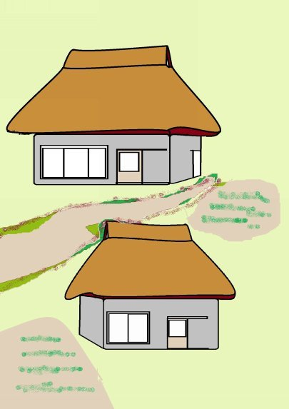
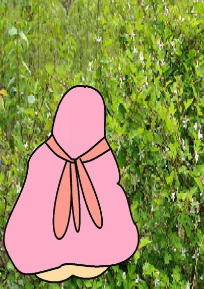
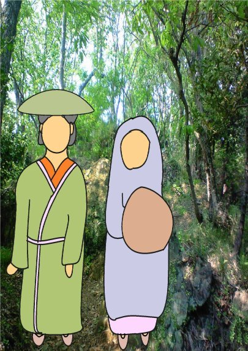
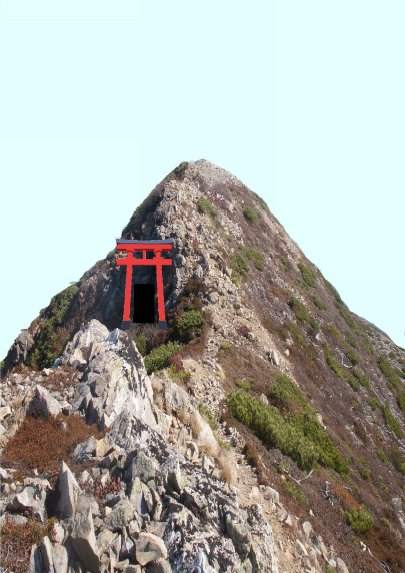
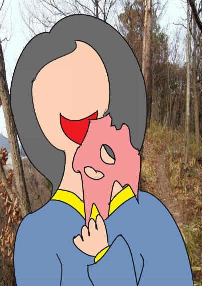
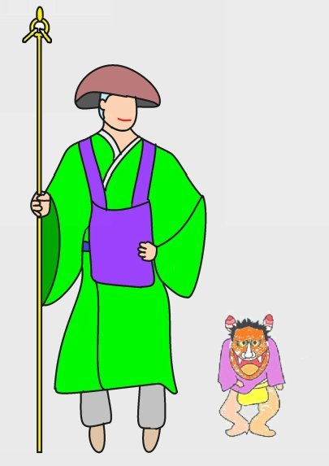
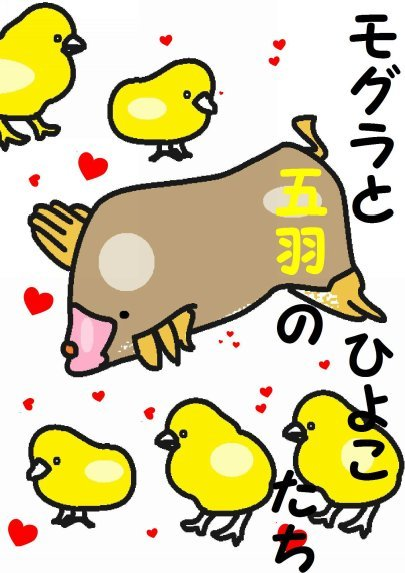

| ⑥山姥 | |
| 深川龍 | |
| UNKNOWN (2016) | |
第六話
伊勢国朝明郡杉谷村の山中によく似た構えの二軒家が並んでおった。二軒とも家ばかりではなく夫婦の年恰好から子供までよく似ておった。頼りになるのは遠い親戚より近い他人と云うが、何事ももやいして仲良う暮らして居った。
「サクベェさん、一度山を越えて夫婦で一緒にお多賀さんにお参りに行こまいか。」
二軒は他人と言うたが嫁さん同士は従姉妹じゃった。田舎は閉じられた社会じゃったから遠い親戚同士の結婚

が多かったのじゃよ。
「うん。お多賀さんなら朝早う出れば夕方には帰られる。子供も手がはなれた 事じゃ。久しぶりにお参りするかのう。」
近江にあるお多賀さんは北勢地方では八風街道を西へ向かい鈴鹿の山を山越えして行くのが普通じゃった。ゴサクさんが言うように行きが半日、帰りが半日の道程じゃった。電車もバスもない時代じゃ。足だけが頼りじゃった。
二軒の夫婦はお多賀さんの祭礼の日を選んで草鞋に脚絆、振り分け荷物を肩にかけて子供を留守居にして朝早く家を出た。空は良く晴れておった。半時（一時間）もするとサクベェさんのかみさんが音を上げた。
「きつい坂道を登って来たんで疲れてしもた。ちょっと、休ませておくんなされ。」
サクベェさんが振り向いた。
「きつい坂道はこれが最後じゃ。それじゃ、ちょっと休んでゆくか。」
皆が休んでいる間にサクベェさんのかみさんは小用を足しに笹原に入った。
「のう、お前さん。若い鹿が二匹も倒れておる。」
サクベェさんのかみさんは笹原から出てくるなりそう言った。
「どれ、どんな鹿じゃ。助かるものなら手当をしてやろう。何にやられたんじゃろう。」
鹿はまだ生きておった。サクベエさんたちは笹原に入って倒れておった鹿を助けてやった。それから、かみさんたちを励ましてまた出かけた。
街道とは云え雑木や笹が生い茂る山道は狭もうて一列で通らねばならん。先頭がサクベェさんで、その後にサクベェさんのかみさん、ゴサクさんのかみさん、そして最後がゴサクさんじゃった。
往きは天気が良うてちょうど昼頃にお多賀さんに着いた。祭礼の日とて、えらい賑わいじゃった。二軒の夫婦は無事にお多賀さんにお参りし、門前町で食事などして帰路についた。
途中、永源寺で休憩していると、杉谷の円導寺に住んでおるというお坊さんに出会った。
「これから先はヤマンバが出るそうじゃ。鹿や猪は勿論のこと人も狙う。気を つけて帰られよ。」
皆は永源寺でも、思い思いに土産物を買った。サクベエさんは徳利に入った酒、ゴサクさんはクルミ煎餅、ゴサクさんのかみさんとサクベェさんのかみさんはそれぞれ木目込人形じゃった。その頃から空模様が怪しゅうなってきた。
帰り道は先頭がゴサクさんで、その後に、ゴサクさんのかみさん、サクベェさんのかみさん、そして最後がサクベェさんの順じゃった。ゴサクさんがかみさんを振り返った。
「降って来ねばよいがのう。」
ゴサクさんのかみさんはゴサクさんの背中をちょっと押して足を速めた。
「急ぎましょうぞ。」
八風峠近くまで来た時じゃった。サクベェさんのかみさんが振り向いた。
「なあ、あんた。小用がしとうなった。」

サクベェさんのかみさんは小用が近い。
「良いとも、待ってやるから川の向こうで用足しをしてくるがええ。」
サクベェさんのかみさんはその場に荷物をおくと笹を押し分けて道の脇を流れる小川の中の石の上をとんとんと渡って行ったんじゃ。
しばらくしてゴサクさんのかみさんが首を傾げた
「おハナさん、遅いのう。どうしたんじゃろう。」
「おかしいな。あいつの小用は短いんじゃが。」
「わたしが見てきましょうかの。」
「いやいや、その内に戻るじゃろう。ゴサクさん、立ちん坊して待つのも何じ ゃ。座って休憩したらどうじゃろう。」
「お二人は休憩しとっておくんなされ。あまりに遅いので心配じゃ。それに 雨が降ってくると困るでわたしが見てきます。」
「おマツさん、そいじゃすまんの。何ぞあったら大声を出してくだされ。」
サクベェさんは近くの石に腰を下ろすと、永源寺で土産に買った徳利の栓を抜いた。
「サクベェさん、重いものを折角ここまで持ってきたんじゃ。家まで持って帰りなされ。」
「何の、家で飲むも、此処で飲むも同じことじゃ。この徳利は大きいのでけっこう重い。少し軽くせんとな。さあさ、まあ一杯やって下され。」
サクベェさんとゴサクさんがちびちびとやっておると、笹の繁みをかき分けてマツさんがハナさんの手を引っ張って出てきた。
「おハナさんったら、気持ちが悪うなったって、座り込んでおった。サクベェさん、おハナさんはお目出たかも知れませんに。」
「ハナ、本当にそうか。」
「まんだ、分からん。昼のマムシにでも当たったのかも知れん。」

「琵琶湖のマムシは名物じゃ。あたるということはなかろう。第一、わしらは何ともない。」
鰻のことをマムシとも云うた。
「では蛙じゃろうか。」
「おハナ、何を言うとる。昼は鰻の丼じゃったろう。」
「そうじゃった。」
二軒の夫婦が自分の家に着いたころにはとっぷり暮れておった。夕飯の支度やらお風呂の用意は子供たちがしておいてくれた。サクベェさんは土産に買ってきた徳利の残り酒をちびりちびりとやりはじめた。
「ハナ、おマツさんが言うたこと本当か。」
「おマツさんが言うたこと。ああ、悪阻かも知れんと言うことかいな。」
「そう言えば腹が急に大きうなったのう。」
「いやだ、あんた。じろじろ見ないでくれろ。」
「もう、合間があるんで産まれんかと思っておったがのう。」
「やや児は授かりものじゃ。いつ出るか分からん。」
ゴサクさんの家でも同じようなことを言っておった。
「おまえの方はどうじゃ。」
「何の事ってす。」
「おハナさんのお腹のことじゃ。」
「あんた、おハナさんがお目出たかも知れませんにってサクベェさんに言うたのは、あれは冗談ですがな。」
「いいや、あの大きな腹には子供が居るに違いない。それにあの表情と目つき じゃ。いつもと違うと思わんか。」
「わたしらの年ではもうやや児が産まれる気遣いはない。」
そんなことがあってから一週間が過ぎた。やっぱり夕食時じゃった。
「マツ、やっぱりおまえも腹が大きい。うちとサクベェさん所はいつも同じに 子が産まれたやないか。今度もそんな気がする。」
「自腹じゃ、これは。」
マツさんもハナさんと同じように大きな腹をしておった。もっとも、おばさん方は現在でも大方そうじゃけどな。
用事でサクベェさんの家に出かけたゴサクさんが戻ってきた。
「マツ、おハナさんがどこかに行ってしもうて居らんそうじゃ。」
「あんた、お隣の女房のことなんかよろしいですがな。」
「何を言っておる。おハナさんが化け物にでもたぶらかされておったらどうするのじゃ。」
「それじゃわたしがおハナさんを捜して来ますでな。多少、帰りが遅くなるかも知れませんがなぁ。」
「そうか。それではそうしてくじゃれ。」
マツさんが家を出るとハナさんが家に帰り、今度はマツさんが行方不明になったんじゃ。
「ハナ、おマツさんはおまえを捜しに行ったまま帰らんそうじゃ。放ってはおけまい。捜しに行ってくる。」
「おマツさんはよその女房じゃ。あんたが捜しにいくのはおかしい。わたしが行きましょに。」
「そうか。それではそうしてくじゃれ。」
ハナさんがマツさんを捜しに出るとマツさんが家に帰り、ハナさんが行方不明になったんじゃ。交互に行方不明になるとはおかしな事があったもんじゃった。今度はゴサクさんが不思議に思うて、自分のかみさんのマツさんの後をつけたのじゃった。
するとどうじゃ、マツさんはハナさんを捜しにどんどん山の中に入って行くではないか。そして古い祠の前に立ったのじゃった。マツさんはゴサクさんが見ているとも知らず、自分の顔の皮をべりっとめくったのじゃった。マツさんの顔は口が耳まで裂けたヤマンバになっておった。そして、祠の中からハナさんの面の皮を取り出して被り、服を換えるとヤマンバはハナさんになってしもう
た。ヤマンバは一人二役をやっておったのじゃ。
ゴサクさんはあまりのことに身が凍って声も出なかった。
ハナさんになったヤマンバは何喰わぬ顔で家に戻った。それとは知らぬサクベェさんはさすがに怒った。
「ハナ、おまえどこに行っておったのじゃ。おマツさんがおまえを捜しに行っ てくれたのじゃぞ。」
「わたしはおマツさんを捜しに行っていましたのや。」
その時、ゴサクさんがやって来たのじゃった。
「今度はマツが戻らんのじゃ。おハナさん、あんたはどこへ行っておったんじゃ。」
「おマツさんを捜しに行っておった。」
「俺らは見たぞ。おマツは三斗山の古い祠じゃ。」
ゴサクさんの目はつり上がっておったが、ハナさんに化けたヤマンバはとぼけた顔をしておった。
「三斗山の古い祠へのう、おマツさんはあんな所へ何をしに行かれたのじゃろか。」
堪りかねたゴサクさんはハナさんにとびかかった。
「このヤマンバめ、しらばくれるな。」
「あれっ、何をなさる。ゴサクさん、気でも狂われたか。」
「いいや、マツもおハナさんも喰われてしもうて、おま

えのこの大きな腹の中じゃ。面の皮、剥がしてやる。」
「おい、わしのハナに何をする。」
サクベェさんが止めに入ったが、ゴサクさんはかまわずその顔をつかんで引っ張った。
するとどうじゃ、ハナさんの面の皮が剥がれて、その下からヤマンバの顔が顕れたのじゃった。
「ゴサクめ、よくも見破ったな。」
ヤマンバは怖ろしい形相になり、血相変えると飛び出して行った。
お多賀さんに行く途中で助けてやった二匹の雌鹿が杉谷円導寺のお坊さんを連れてやって来た。先に永源寺で出会ったお坊さんじゃ。

「この雌鹿たちに聞いたのじゃが、そなたたちのかみさんもヤマンバに襲われたそうじゃの。」
サクベェさんは事の次第を話した。
「ヤマンバが住んで居るのは三斗山じゃったか。わしが行って追い払ってやろう。」
お坊さんは三斗山の古い祠の前で経を読み、呪文を唱えた。そしたら、穴の中から背中に口があるヤマンバが飛び出してきたそうじゃ。背中に口がある訳がないが、耳まで大きく裂けておったのでその様に見えたのじゃろう。
「せっかく人の魂を食べて人間に戻ろうとしておったものを、よくも邪魔を してくれたな。」
ヤマンバはそう言うと大きなホゾ（木楢）や赤松の枝にぶら下がりながら飛んでいった。
「ヤマンバに襲われたそなたたちのかみさんが不憫じゃ。呼び戻してやろう。。」
お坊さんはまずおハナさんの面の皮を永源寺で買ってきた木目込人形に被らせた。次に三斗山の祠へ行っておマツさんの面の皮を持ってきてもう一つの木目込人形に被らせた。それからお坊さんは二体の木目込人形に向かって経を読み、呪文を唱えた。そしたらどうじゃ。二体の木目込人形は見る見る人間になり、おマツさんとおハナさんになった。

「お坊さま、ありがとうござりました。」
おマツさんとおハナさんは声を揃えてそうを言うた。
お坊さんはお釈迦様が生まれた仏陀伽耶で修行をなされ、神通力を持った杉谷善住坊というお方じゃった。
昔は生臭坊主はおらなんだ。昔のお坊さんは肉食妻帯をせず真剣に修行し一心に祈ったゆえ霊験あらたかじゃった。 （完）
深川龍の
アニマルシリーズ⑤モグラと五羽のひよこたちもお読みください。

- 1 -